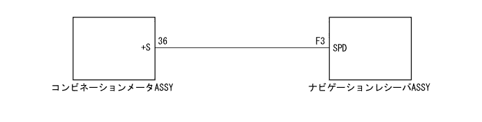
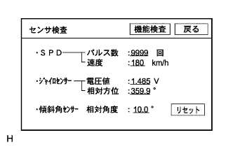
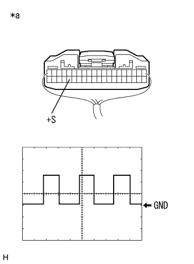

DTC B15C2 Vehicle Speed Signal Malfunction |
| DTC No. | Diagnosis Description | Inspection Point |
|---|---|---|
| B15C2 | Difference between GPS speed and SPD pulse detected |
|

)| Step 1 | Clear DTC |
Using SST (TaSCAN), read the DTCs following the screen. (see)
Select "Clear" on the screen display and clear the DTCs following the screen.
Turn IG OFF.
| NEXT | |
| Step 2 | Recheck DTC |
Using SST (TaSCAN), check the DTCs again and proceed to the destination below. (see)
| Result | Proceed to |
|---|---|
| Code output | A |
| No code output | B |
|
| ||||
| A | |
| Step 3 | Service Inspection (Sensor Inspection) |
Sensor Check
 |
Select "Sensor Check" from Service Inspection - Function Inspection/Adjustment - GPS/Sensor Check screen, actually drive the vehicle, and check that the vehicle speed changes.
| Result | Proceed to |
|---|---|
| Vehicle speed does not change | A |
| Vehicle speed changes | B |
|
| ||||
| A | |
| Step 4 | Inspect Wire Harness and Connector (Combination Meter Assembly - Navigation Receiver Assembly) |
Pre-inspection Preparation
Disconnect the combination meter assembly connector.
Disconnect navigation receiver assembly connector F.
Resistance Inspection
Using SST (Toyota electrical tester), measure the resistance between the terminals of the vehicle side wire harness connector.
| Tester Connection (Terminal Symbol) | Condition | Standard |
|---|---|---|
| 36(+S) - F3(SPD) | Always | Below 1 Ω |
|
| ||||
| OK | |
| Step 5 | Inspect Combination Meter Assembly (Output Waveform) |
 |
Waveform Inspection
Using SST (TaSCAN), inspect the waveform between the connector terminals.
| Item | Description |
|---|---|
| Tester Connection | 36 (+S) - Body ground |
| Tool Setting | 5 V/DIV、20 ms/DIV |
| Condition | Turn wheel by hand |
| *a | Connector connected (Combination meter assembly) |
|
| ||||
| OK | ||
| ||